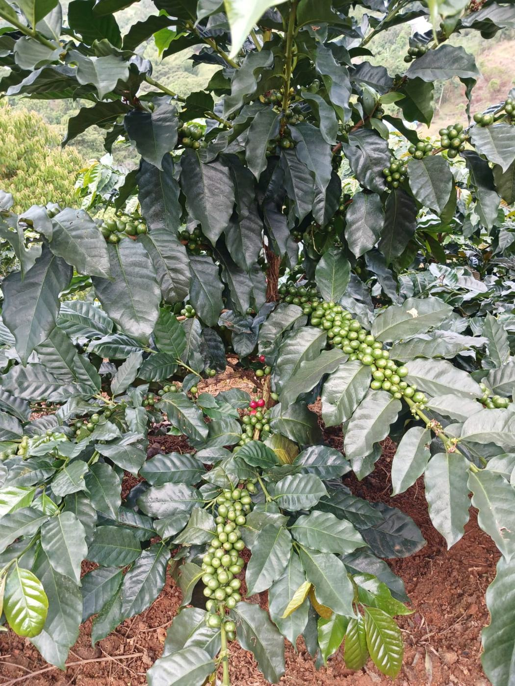
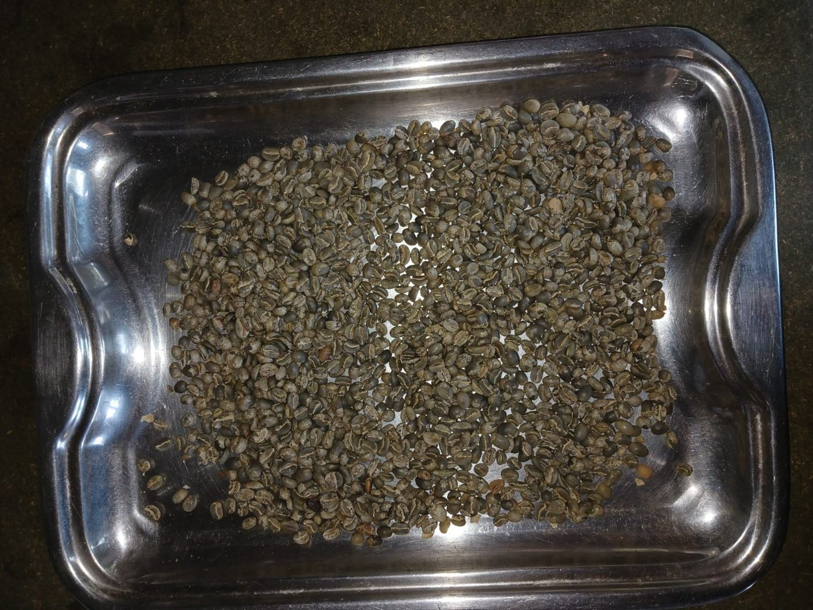
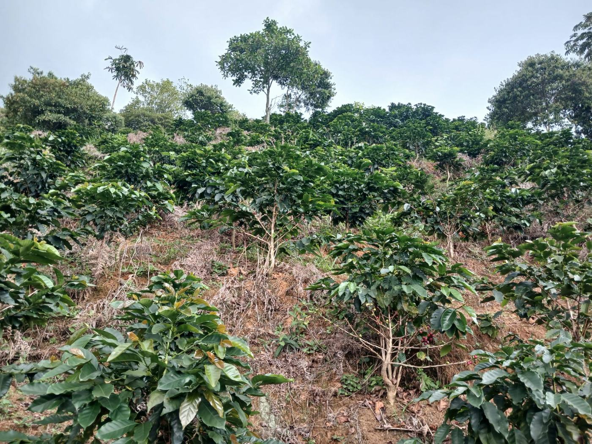

Blog
Origen y variedades: lo que hace único al café D'Excelso

El sabor de un buen café no comienza en la taza, sino en la tierra donde nace. Por eso, entender el origen y las variedades es esencial para valorar un café realmente premium.
En D'Excelso, nuestro grano tiene raíces profundas: nace en la Finca Villa Hanny, ubicada en San Vicente, zona rural de Jamundí (Valle del Cauca), a más de 1.600 metros sobre el nivel del mar. Ese entorno —montañoso, fresco y privilegiado— es el que define el carácter y la calidad de nuestro café.
El origen: una tierra que transforma el sabor
En las zonas altas del Valle del Cauca, la naturaleza trabaja a nuestro favor:
- Las temperaturas más frías ralentizan la maduración.
- La planta desarrolla más azúcares naturales.
- Los granos crecen más densos y compactos.
¿El resultado? Un café con aroma intenso, acidez brillante y un perfil sensorial más complejo, ideal para quienes disfrutan una taza equilibrada y llena de matices.
La altura de 1.600 msnm no es un dato técnico: es uno de los secretos que convierten a D'Excelso en un café de alta calidad.
Variedades que potencian la experiencia
En la finca se cultivan variedades arábicas cuidadosamente seleccionadas por su adaptabilidad al clima de montaña y su excelente perfil sensorial. Estas variedades destacan por:
- Notas dulces y aromáticas
- Cuerpo medio y textura agradable
- Sabores limpios y persistentes
- Excelente desempeño en métodos filtrados y espresso
Cada variedad aporta un toque especial que, al mezclarse con la altura, el suelo y la tostión artesanal, da vida a una taza única.
¿Por qué importa tanto la variedad del café?
Porque cada una aporta características distintas al sabor:
- Aromas (florales, frutales, achocolatados)
- Cuerpo (ligero, medio, sedoso)
- Acidez (delicada, brillante, suave)
- Final (corto, prolongado, dulce)
Conocer la variedad es como leer la etiqueta de un buen vino: te ayuda a elegir mejor y a disfrutar más.
Descubre nuestros cafés
Blog
Recetas con café: 3 formas deliciosas de disfrutar D'Excelso en casa

El café no solo se disfruta en la mañana. También puede ser el ingrediente estrella para crear momentos especiales, sin ser barista ni tener equipos complicados.
Aquí te compartimos tres recetas con café fáciles, rápidas y muy populares, perfectas para preparar en casa y sorprenderte con nuevos sabores.
1. Capuchino casero (el favorito de todos)
Cremoso, aromático y reconfortante. El capuchino es una de las bebidas con café más consumidas en el mundo… y la buena noticia es que puedes hacerlo en casa.
Ingredientes:
- 1 taza de café D'Excelso recién preparado
- ½ taza de leche (entera o vegetal)
- Azúcar o endulzante al gusto
- Canela o cacao en polvo (opcional)
Cómo prepararlo:
- Prepara una taza de café D'Excelso fuerte.
- Calienta la leche sin que hierva.
- Espuma la leche (puede ser con batidor manual, licuadora o frasco).
- Sirve el café y agrega la leche espumada por encima.
- Espolvorea un poco de canela o cacao.
Tip D'Excelso: usa café de tostión media para un sabor equilibrado y aromático.
2. Cold brew (café frío, suave y refrescante)
Ideal para días calurosos. El cold brew es tendencia porque es menos ácido, más suave y muy refrescante.
Ingredientes:
- ½ taza de café D'Excelso molido grueso
- 4 tazas de agua fría
- Hielo
- Leche o jarabe (opcional)
Cómo prepararlo:
- Mezcla el café con el agua en una jarra.
- Déjalo reposar en la nevera entre 12 y 18 horas.
- Filtra el café y sírvelo con hielo.
- Agrega leche o jarabe si lo deseas.
Tip D'Excelso: el café de altura resalta sabores suaves y dulces en el cold brew.
3. Café affogato (postre rápido con café)
Un clásico italiano que combina lo mejor del café y el postre. Perfecto para cerrar una comida o darte un gusto especial.
Ingredientes:
- 1 bola de helado de vainilla
- 1 taza pequeña de café D'Excelso caliente
- Chocolate rallado o nueces (opcional)
Cómo prepararlo:
- Coloca el helado en un vaso o copa.
- Vierte el café caliente sobre el helado.
- Decora al gusto y disfruta de inmediato.
Tip D'Excelso: el contraste entre el café caliente y el helado es simplemente irresistible.
Disfruta el café más allá de la taza
Estas recetas demuestran que el café puede ser versátil, creativo y fácil de disfrutar en casa. Con un café premium como D'Excelso, cada preparación se convierte en una experiencia.
Descubre nuestros cafés premium
Blog
Cultura cafetera: café artesanal cultivado en altura en el Valle del Cauca

La cultura cafetera es una herencia que se cultiva con paciencia, respeto por la tierra y amor por el origen. Desde las montañas del Valle del Cauca, el café no solo se produce: se vive, se aprende y se transmite de generación en generación.
En la zona rural de San Vicente, Jamundí, a más de 1.600 metros sobre el nivel del mar, nace el café de D'Excelso, cultivado de manera artesanal en la Finca Villa Hanny, un territorio privilegiado del Valle del Cauca. Aquí, la cultura cafetera se vive desde el origen: cada mata de café es sembrada a mano, cuidada mes a mes con prácticas tradicionales que incluyen poda, limpieza de maleza y protección responsable del cultivo, siempre respetando el ritmo natural de la tierra.
Gracias a la altura, el clima fresco y el manejo manual del cultivo, el grano madura lentamente, desarrollando aromas más intensos, sabores equilibrados y una mayor complejidad en taza, características propias de un café de altura colombiano. Esta forma de trabajo no solo preserva la calidad del grano, sino que refleja una tradición cafetera que se ha transmitido de generación en generación.
La cosecha también es manual, seleccionando únicamente los frutos en su punto óptimo. Luego, el café pasa por un proceso cuidadoso de secado natural, seguido de un tostado artesanal a gas, realizado en pequeños lotes para conservar su perfil sensorial. Finalmente, cada bolsa es empacada a mano, con dedicación y atención al detalle, asegurando frescura y calidad en cada entrega.
En D'Excelso no hablamos de producción industrial, hablamos de café artesanal colombiano, de origen claro, cultivado en Jamundí y pensado para quienes valoran el proceso tanto como el sabor. Porque cuando conoces de dónde viene tu café, la experiencia se vuelve más auténtica… y cada taza sabe mejor.
Contáctanos